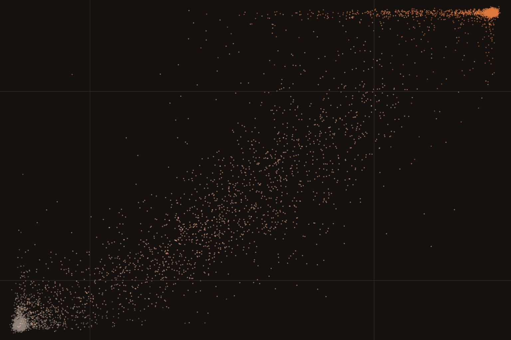

← Research·Experiments·
Rebuilding an AI-text detector from its model card: a 1.7B on open-model data ties voi-slop-detect-4B on ranking but flags more humans
voi-slop-detect-4B scores how much of a text an LLM wrote, and its card describes the recipe but not the data. This note rebuilds the data from the card with open-weight models only, trains a Qwen3-1.7B on it, and scores both detectors on the same benchmark rows. It is also a six-lesson course: every step is a script you can run.

Summary: the short answer and the key results
In short
Can a published AI-text detector be rebuilt from its model card alone, with open-weight models writing the training data?
Most of the way, at less than half the size. voi-slop-detect-4B reaches 3-way macro-F1 0.886 on EditLens test (human, AI-edited, AI-generated). A Qwen3-1.7B trained on our rebuilt data reaches 0.876 on the same 6,115 rows, 0.010 [0.002, 0.017] behind, with the same ranking quality (AUROC 0.976 vs 0.977). It ties on the unseen Enron domain (0.867 vs 0.863) and beats the 4B on unseen Llama text (0.891 vs 0.828), because it catches more fully generated Llama text. It is worse in two places: at a cut set to flag 1% of our own human texts it flags 17 of 150 human magazine articles (the 4B flags 1), and it misses 45 of 297 texts written to imitate a named author (the 4B misses 22). A first version of the data, without light edits, imitation or long human prose, scored 0.833. A Qwen3.5-4B, the target’s own base, is training now on the same data; its results will be added to this note.
Key results
| What we tested | Result | Compared with |
|---|---|---|
| Does our scoring of the target reproduce its card? | Yes, to the third decimal: EditLens test 0.886 (human 0.898, AI-edited 0.816, AI-generated 0.944), Enron 0.863, Llama 0.828; Human Detectors 1 human flagged and 4 misses; Epoch AI 1, 0 and 22 | The card: the same numbers (Llama 0.829) |
| How close does a 1.7B trained on rebuilt data get on EditLens test? | 0.876 [0.868, 0.884]; per class 0.888 / 0.791 / 0.949; AUROC 0.976 | voi-slop-detect-4B on the same rows: 0.886 [0.878, 0.894], difference −0.010 [−0.017, −0.002]; AUROC 0.977 |
| Out of distribution? | Enron (unseen domain) 0.867, a tie: +0.004 [−0.004, +0.012]. Llama (unseen generator) 0.891, ahead: +0.063 [+0.052, +0.074] | voi-slop-detect-4B: 0.863 and 0.828 |
| Did fixing the data help? | Yes: data v2 (light and partial edits, style imitation, long human prose, stronger editors) lifted the 1.7B from 0.833 to 0.876 on EditLens test and cut Epoch AI imitation misses from 148 to 45 | The pilot 1.7B on data v1, same recipe |
| Does it accuse humans? | More than the target at our own cut (flagging 1% of our validation humans): 17 of 150 Human Detectors articles and 8 of 495 Epoch AI passages. At the target’s cut, 3 and 0, but then 69 style imitations are missed | voi-slop-detect-4B at its shipped cut: 1 and 1 |
| Does it miss AI text? | No plain-prompt passage on Epoch AI (0 of 297); no Human Detectors article (0 of 150, including 30 paraphrased and 30 humanized ones); 45 of 297 style imitations | voi-slop-detect-4B: 0, 4 and 22 |
| Did the pre-registered validation gate pass? | No, by 0.0004: data v2 beat v1 on all validation rows (+0.015 [+0.009, +0.020]) but its interval on the pilot’s own rows reached −0.0104 against a fixed bound of −0.010. The 4B run went ahead by decision, not by the rule | Section 4.5 |
01Introduction
Paste a Hacker News comment from 2022 into a good AI-text detector and it should say “human”. Ask an LLM to fix that comment’s grammar and it should still say “human”, because a person wrote it. Ask the LLM to rewrite it in its own words and the answer should drift toward “AI”. Ask it to write a new comment from a two-line summary and the answer should be “AI”. voi-slop-detect-4B is built to give exactly that graded answer: one number from 0 to 1 for how much of the text an LLM wrote.
What is known. voi-slop-detect-4B (VoightKampffLabs, Apache-2.0) is Qwen3.5-4B with a one-number head, trained on 484k texts built from 98k human documents written before 2023. On EditLens, a benchmark for scoring how much AI edited a text, it is within 0.02 of EditLens’s own 24B models and well ahead of commercial detectors. Its card describes the data recipe in detail but publishes no data.
What is missing. A card is a claim. Without the data, nobody outside the lab can check how much of the result comes from the recipe and how much from the particular texts, or whether the recipe works without the closed models that wrote much of its data (about 15% of its AI rows came from Anthropic models, more from OpenAI’s and Google’s).
Following only the model card, and using only open-weight models to write the training data, how close can we get to voi-slop-detect-4B on the same benchmark rows?
What this note does. It rebuilds the data and the training from the card, scores the target and our models on identical rows, and writes each step up as a lesson. Its contributions:
- A check that the target’s published numbers reproduce exactly when we score it ourselves.
- An open recipe for the training data: seven pre-2023 human sources, three kinds of AI version from the card plus three of ours, eleven open-weight generators, filters and benchmark decontamination.
- A measured result: a 1.7B on that data is 0.010 behind on EditLens test, level on Enron and ahead on unseen Llama text, with the cost spelled out (more humans flagged, more imitations missed).
- A data ablation (v1 against v2) that shows which fixes moved the score, and an honest account of a validation gate that narrowly failed.
- Six runnable lessons, from reading the card to a paired bootstrap.
Success, fixed before the first model was trained: (1) the target’s numbers reproduce on our scoring; (2) the comparison is on the same rows with paired intervals; (3) no benchmark text is trained on; (4) the result holds out of distribution (Enron, Llama), not only on EditLens test.
02Setup
2.1 What the target predicts
The detector reads the first 512 tokens of a text (fenced code emptied) and outputs one logit; sigmoid(logit) is the score. Two cut points from its bands.json turn the score into three classes: below 0.15 human, 0.75 or above AI-generated, AI-edited between. A third cut, 0.385, flags a text as not human; it was set so that 1% of the authors’ validation human texts are flagged. We use the same band edges for our models, and fit our own flag cut the same way, on our own validation humans.
The label it is trained on is the share of words changed. A worked example from lesson 4, on one 18-word review: fixing only punctuation changes 0% of the words (human band); “make it concise” changes 45% (AI-edited); “rewrite it in your own words” changes 78% (AI-generated). A text written from scratch by a model gets 1.
2.2 Rebuilding the data, twice
Human text. Text written before ChatGPT’s release (November 2022) is human by date, so nobody has to label it. We took one public file per source on the card: Amazon reviews (2020–21), arXiv abstracts (2020), Hacker News comments (2022), Medium posts (2020–21), Reddit comments (2020–22, ten subreddits), Stack Overflow posts (2022) and BBC news (XSum, 2017). r/WritingPrompts is left out because it is an EditLens test source. The split (80 / 10 / 10) is a hash of the document id, so a human text and its AI versions always share a split.
AI versions (data v1, the card’s three). A mirror is written from a two-line summary and keywords; the writer never sees the original, so every word is the model’s (target 1). A rewrite follows one of eight instructions, from “fix the grammar” to “rewrite in your own words” (target: share of words changed). A round trip goes to Spanish, German or Russian and back (target: share changed). Generators: gpt-oss-120b and 20b, DeepSeek-V3.2, Qwen3-235B-A22B and Qwen3-Next-80B, Gemma 4 31B and 26B-A4B. Only open-weight models wrote training text, so the recipe can be rerun without closed APIs. Llama is left out so that EditLens’s Llama split stays an unseen generator, as it is for the target.
Filters, as on the card, plus two of ours. Texts under 30 prose words; edits that changed under 2% of the words; edits whose meaning drifted (embedding cosine to the source below 0.75); mirrors off topic (cosine below 0.35); non-English text (the XSum file holds some Welsh articles); and any human document sharing three 10-word runs with a benchmark text, which dropped 104 documents, mostly BBC articles that EditLens’s news texts also contain.
Data v2 came from reading the pilot’s errors on its own validation split and on EditLens (section 4.2): light AI edits were being called human, style imitation was missed, and the flag cut was too strict on long human prose. It adds 13,962 human documents (a second batch from the same seven sources, 2,000 longer Medium and XSum passages of up to 550 words, and 1,462 passages from pre-1919 books in PG-19) and 49,027 AI versions: partial edits that reword a third to two thirds of the sentences, five light edit instructions, 3,000 style imitations (shown three human texts of a kind, write a new one), and four larger open editors at a low weight (Qwen3.5-397B-A17B, Qwen3.5-122B-A10B, GLM-4.6, Kimi-K2-Instruct-0905).
| Human docs | AI versions | Training rows | Train bands (human / edited / generated) | |
|---|---|---|---|---|
| Data v1 (pilot) | 11,200 | 33,589 | 33,270 | 32% / 40% / 28% |
| Data v2 | 25,162 | 82,616 | 79,120 | 43% / 30% / 26% |
| The card | 98k | 386k | about 387k | not given |
2.3 Model and recipe
The card’s recipe, unchanged: a sequence-classification head with one output on a Qwen base model; LoRA rank 16, alpha 32 on every attention and MLP projection, the head trained in full; binary cross-entropy against the soft target, each row weighted so that the three bands pull equally; learning rate 2e-4, batches of at least 64 rows, the first 512 tokens. BCE with a target of 0.43 is lowest when the model outputs 0.43, so the model learns the fraction itself, not a yes or no. Bases: Qwen3-0.6B-Base and Qwen3-1.7B-Base for the pilot and data v2; Qwen3.5-4B for the run in progress.
2.4 Benchmarks
All test only; none of their text is trained on. EditLens test (6,115 texts: news, Reddit writing prompts, FineWeb-Edu, Amazon and Google reviews, edited or written by GPT-4.1, Claude Sonnet 4, Gemini 2.5 Flash and Llama-3.3-70B), test_enron (6,147 emails, an unseen domain) and test_llama (5,957, an unseen generator). Human Detectors (300 magazine and news articles, 150 by humans, 30 per AI condition, from the EditLens repository). Epoch AI’s detector test (495 human passages by 99 authors, 297 plain-prompt and 297 style-imitation passages by Claude Opus 4.8, GPT-5.5 and Gemini 3.1 Pro). The target is scored on every one of these rows by the same code as ours.
03How the study was run
- Target measured first: voi-slop-detect-4B (pinned revision) on all 19,608 benchmark texts, one per forward pass; numbers checked against its card.
- Data v1: 11,200 human documents; 33,589 AI versions from about 53,000 generation calls; labelled and filtered into 41,283 rows.
- Pilot: Qwen3-0.6B and 1.7B trained on data v1; the 1.7B chosen on validation (macro-F1 0.911 against 0.898); both scored once on the benchmarks.
- Data v2: designed from the pilot’s errors; 13,962 more human documents and 49,027 more AI versions; 98,332 rows.
- Gate, written and committed before any v2 result: the v2 1.7B goes on to a 4B run only if it beats the v1 1.7B on all v2 validation rows (paired 95% interval above 0) and is not worse on the pilot’s own validation rows (interval’s lower end above −0.010). The v1 1.7B was retrained for this comparison with the same seed.
- v2 1.7B: trained, compared on validation (the gate missed by 0.0004), then scored once on the benchmarks.
- 4B: started on data v2 by the author’s decision after the gate result; in progress.
| Fixed before any training | Changed after reading results |
|---|---|
| The card’s recipe and band edges; the benchmarks and the test-only rule; the generator rule (open-weight, no Llama); the filters and decontamination; the paired bootstrap; the flag-cut rule (1% of our validation humans); the v2 gate and its bounds | Data v2 (from the pilot’s validation and benchmark errors, so EditLens test informed the v2 design: see section 7); the choice of the 1.7B over the 0.6B (on validation); going ahead with the 4B despite the gate |
Conditions: training and scoring on rented GPUs on Modal (H100 for the Qwen3 models, A100-80GB for Qwen3.5, whose linear-attention kernels refuse Hopper GPUs with the PyTorch 2.9 Triton build), transformers 5.22, PEFT 0.21; generation through Hugging Face Inference Providers; labelling, decontamination and figures on a laptop. The v2 1.7B trained for 2.3 hours on one H100.
04Results
4.1 Our scoring of the target reproduces its card exactly
On all three EditLens splits, Human Detectors and Epoch AI, voi-slop-detect-4B scored by our code gives the card’s numbers to the third decimal: 0.886 on EditLens test with per-class F1 0.898 / 0.816 / 0.944, 0.863 on Enron, 0.828 on Llama (the card says 0.829), 1 human flagged and 4 paraphrased GPT-4o articles missed on Human Detectors, and 1 human flagged, 0 plain and 22 imitation passages missed on Epoch AI. Every later comparison uses these exact scores, row by row.
4.2 The pilot on data v1 learned the recipe but not the light edits
The 1.7B reached 0.911 on its own validation split and 0.833 on EditLens test, 0.053 [0.044, 0.062] behind the target; the 0.6B reached 0.788. The gap between our validation and EditLens (0.08) was larger than the gain from a bigger model (0.045), which pointed at the data. The errors said where: of EditLens’s 2,031 AI-edited texts, the pilot put 615 in the human band (the target, 395). Most of our rewrites changed 45–60% of the words, so lightly edited text was rare in training. On Epoch AI it missed 148 of 297 style imitations: it had never seen one.
4.3 With data v2 the 1.7B comes within 0.010 of the 4B, ties it on Enron and beats it on Llama

Figure 1 shows the change. On EditLens test the v2 1.7B scores 0.876 against 0.886, a difference of −0.010 [−0.017, −0.002] on paired resamples. On Enron, emails neither model saw, it is level: +0.004 [−0.004, +0.012]. On Llama text it is ahead by 0.063 [0.052, 0.074], almost all of it on fully generated text: F1 0.970 against the target’s 0.820. AUROC, which only asks whether human texts score lower than the rest and ignores the cut points, is level on all three (0.976 vs 0.977, 0.979 vs 0.978, 0.982 vs 0.982).

Figure 2 shows where the remaining gap sits: AI-edited text, 0.791 against 0.816 (−0.025 [−0.038, −0.012]), and a little on human text, 0.888 against 0.898. Both detectors find AI-edited text the hardest class, and the same texts are hard for both: the scores of the two models correlate at 0.97 over the 6,115 texts (the cover).
4.4 It flags more human prose and misses more imitations than the target

On the yes/no question, Figure 3 shows the trade. Our model misses no AI article on Human Detectors, including the 30 paraphrased GPT-4o ones (the target misses 4), and no plain-prompt passage on Epoch AI. But it flags 17 of 150 human magazine and news articles and 8 of 495 Epoch human passages, where the target flags 1 of each. The ranking is fine (AUROC on Human Detectors 0.9993 against 0.9985), so this is a threshold problem: our validation humans are mostly short comments and reviews, and a cut that flags 1% of those is too low for 500-word magazine prose. At the target’s own cut (0.385) instead, ours flags 3 of 150 human articles and 0 of 495 Epoch human passages, and still misses no Human Detectors article, but its style-imitation misses rise to 69 of 297: the cut moves errors from one column to the other. This second reading was computed after the benchmark results were seen, and nothing was chosen from it. On style imitation the v2 data cut misses from 148 to 45, against the target’s 22; by generator, 12 Claude, 27 GPT-5.5 and 6 Gemini imitations got through (the target: 2, 8 and 12).
4.5 The validation gate missed by 0.0004, and the 4B run went ahead anyway
Before seeing any v2 result we committed a rule: train the 4B only if the v2 1.7B beats the v1 1.7B on all v2 validation rows and is not worse on the pilot’s own validation rows by more than 0.010. On all 9,562 rows it won, +0.015 [+0.009, +0.020] (AI-edited +0.022). On the pilot’s 4,031 rows it scored 0.909 against 0.912, −0.004 [−0.0104, +0.0026]: the interval’s lower end crossed −0.010 by 0.0004, so the rule said stop. Two checks outside the rule pointed the other way: light edits (15–35% of words changed) were caught as edited 82% of the time against 78%, and long human passages were never flagged (1.7% before). The author decided to train the 4B anyway. Because of that order, the v2 1.7B’s benchmark numbers above were seen before the 4B was trained, so the 4B’s benchmark scores will be a second look at the same test sets. No setting of the 4B was chosen from test results: its recipe, data and epochs were fixed before the v2 1.7B was scored.
05Compared with published results
| Detector | Size | EditLens test | Enron | Llama | Source |
|---|---|---|---|---|---|
| EditLens cosine | 24B | 0.904 | 0.866 | 0.850 | voi-slop-detect-4B’s card |
| voi-slop-detect-4B | 4B | 0.886 | 0.863 | 0.828 | scored here (matches its card) |
| Ours, data v2 | 1.7B | 0.876 | 0.867 | 0.891 | this note |
| Ours, data v1 | 1.7B | 0.833 | 0.792 | 0.849 | this note |
| GPTZero | — | 0.727 | voi-slop-detect-4B’s card | ||
| Pangram (3.x API) | — | 0.695 | voi-slop-detect-4B’s card |
3-way macro-F1. The target’s own ablation is the closest comparison for size: on its held-out split, its Qwen3.5-0.8B scored 0.908 against 0.923 for the 4B. Our 1.7B is a different base (Qwen3, not Qwen3.5) on about a quarter of the data.
06Implications for AI safety
Detectors are used to make decisions about people: whether a student’s essay or a job application was written by them. This rebuild shows two things that matter for that use. First, the recipe carries most of the result: an outside team, without the data and without closed models, got within 0.010 on the published benchmark, which makes the card’s claims checkable. Second, the number that matters for a person, how often a human is wrongly flagged, depends on the threshold more than on the model, and a threshold fitted on one kind of human writing did not transfer to another (1% on our validation humans, 11% on magazine articles). Anyone deploying a detector should fit its flag cut on human writing like the writing it will judge, and report its false-positive rate there.
07What this does not show
- Test sets were looked at more than once. The pilot and the v2 1.7B were each scored once, but data v2 was designed after reading the pilot’s EditLens errors (light edits called human), so EditLens test informed the data, though no model setting was tuned on it. Enron, Llama, Human Detectors and Epoch AI are less exposed, and the v2 gains held there too.
- Training ran longer than the stated three epochs. Each optimiser step held whole micro-batches of at least 64 rows, but the step count assumed exactly 64, so the 1.7B models trained for about 3.8 epochs and the 0.6B for 3.7 (epoch_quirk.json). Both arms of the gate comparison had the same quirk. It is fixed for the 4B run.
- Our flag cut is not the target’s. We fit ours on our validation humans, as the target’s authors did on theirs. Neither is fitted on the benchmarks. The comparison of false positives is between two thresholds fitted on two different human sets.
- One seed per model, as on the target’s card. The paired intervals cover the test texts, not training noise.
- About a quarter of the data and a smaller base. The card’s 386k AI rows came from seven families including closed models; ours are 82,616 from eleven open models.
- English only, first 512 tokens only, and the benchmarks’ domains. Learner English (the card’s non-native essays) and APT-Eval were not run.
08Learn it step by step, and reproduce it
The work is written as six lessons for engineers new to ML. Each has a README that explains the idea with an analogy, a lesson.py that runs in seconds on made-up examples, and the real script it introduces.
| Lesson | What you learn | Script |
|---|---|---|
| 01 The target | A model card as a spec; bands, flag cut, macro-F1; reproducing the target’s numbers | score_voi.py |
| 02 Human data | Pre-2023 text as a free label; split by document; never train on a test source | 01_human.py |
| 03 AI versions | Mirror, rewrite, round trip; open-weight generators; never losing a finished API call | 02_generate.py |
| 04 Labels | Share of words changed as the label; filters; decontamination; band weights | 03_label.py |
| 05 Train | A one-logit head on a Qwen base; LoRA; BCE on a soft target | 04_train.py, train_modal.py |
| 06 Paired evaluation | Same rows, choose on validation, paired bootstrap; reading the errors | 05_eval.py, compare_val.py |
Recompute every number and figure in this note from the saved scores:
experiments/slop-detector/reproduce.sh --scoresRerun from scratch (a Hugging Face token for generation, a Modal account for training, and EditLens’s data, which is CC BY-NC-SA and non-commercial):
experiments/slop-detector/reproduce.sh --dry-run # lists every command
experiments/slop-detector/reproduce.sh09What’s next
- A Qwen3.5-4B, the target’s own base, is training now on data v2 with the card’s recipe; its results will be added to this note.
- A flag cut fitted on long human prose (magazine, blog and fiction passages written before 2023), reported beside the current one.
- More style imitation per genre, especially scientific writing, where both detectors miss the most.
- The card’s other benchmarks: learner English and APT-Eval.
10Questions and answers
Can you rebuild a detector from its model card without its data?
Mostly. Following voi-slop-detect-4B’s card and writing all training text with open-weight models, a Qwen3-1.7B reached 3-way macro-F1 0.876 on EditLens test against the 4B’s 0.886 on the same texts, tied it on unseen emails and beat it on unseen Llama text.
Does a detector trained only on open-model text catch Claude, GPT and Gemini?
On plain prompts, yes: it missed none of 297 Epoch AI passages by Claude Opus 4.8, GPT-5.5 and Gemini 3.1 Pro, and none of 150 Human Detectors articles by Claude, GPT-4o and o1-pro, paraphrased and humanized ones included. When those models imitate a named author, it missed 45 of 297.
Why does it flag more human writing than the 4B?
Mostly the threshold. Its ranking of human against AI text on Human Detectors is as good as the 4B’s (AUROC 0.9993 vs 0.9985), but its flag cut was fitted on short comments and reviews, and long magazine prose scores higher. A cut fitted on long-form human text is the next step.
What made the biggest difference?
The data, more than model size. Moving from data v1 to v2 at the same 1.7B size lifted EditLens test from 0.833 to 0.876; going from 0.6B to 1.7B on v1 had lifted it by 0.045. The v2 additions were light and partial AI edits, style imitations and long human passages.
AAppendix: data and references
Every file and column is listed in README.md. The main ones: results/eval/v2-1.7b.json (one file per model, also pilot-1.7b and pilot-0.6b: paired intervals for every metric and split, false positives and misses), results/voi/test.json (the target’s score for every benchmark row, one file per split), compare_val.json (the gate), labels.json (data counts, filters, change per instruction) and runs/*/scores/ (our score for every benchmark row). No training or benchmark text is included: the human sources keep their own licences and EditLens is non-commercial.
Techniques
| Label | Word-level diff (difflib SequenceMatcher): 1 − 2·shared / (words in both); mirrors and imitations 1, humans 0 |
|---|---|
| Model | Qwen3 base + one-logit sequence-classification head; LoRA r 16, alpha 32 on all attention, linear-attention and MLP projections; BCE on the soft target with band-balanced weights; AdamW, lr 2e-4, cosine with 3% warm-up |
| Filters | Under 30 words; under 2% changed; all-MiniLM-L6-v2 cosine (0.75 edits, 0.35 mirrors); English stop-word share; 10-word-run decontamination against every benchmark |
| Statistics | Paired percentile bootstrap over texts (1,000 resamples) for every difference; AUROC with scikit-learn |
References
- VoightKampffLabs. voi-slop-detect-4B (Apache-2.0), Hugging Face, 2026; revision
b23f86f1497aa41a6aa196ecd7939f8708580a17. - Thai, Emi, Masrour, Iyyer. “EditLens: Quantifying the Extent of AI Editing in Text.” arXiv 2510.03154, ICLR 2026; data (CC BY-NC-SA 4.0).
- Lee, J. (Epoch AI). “AI detectors rarely flag human writing, but sometimes miss AI text imitating real authors.” Epoch AI data insight, 2026; data.
- Russell, Karpinska, Iyyer. “People who frequently use ChatGPT for writing tasks are accurate and robust detectors of AI-generated text.” arXiv 2501.15654, ACL 2025 (Human Detectors).
- Qwen Team. Qwen3-1.7B-Base and Qwen3.5-4B.
- Human sources: McAuley Lab, Amazon Reviews 2023; arXiv abstracts; Hacker News; Medium articles; Reddit comments; Stack Overflow posts; Narayan et al., XSum; Rae et al., PG-19.
- Episode 1 of this series: De-slopping Qwen3-4B, which measured voi-slop-detect-4B on de-slopped text.
How to cite
@misc{lie2026slopdetector,
author = {Albert Lie},
title = {Rebuilding an AI-text detector from its model card: a 1.7B on open-model data ties voi-slop-detect-4B on ranking but flags more humans},
year = {2026},
month = nov,
url = {https://albertlieyingadrian.github.io/steerlab/experiments/slop-detector/report/}
}